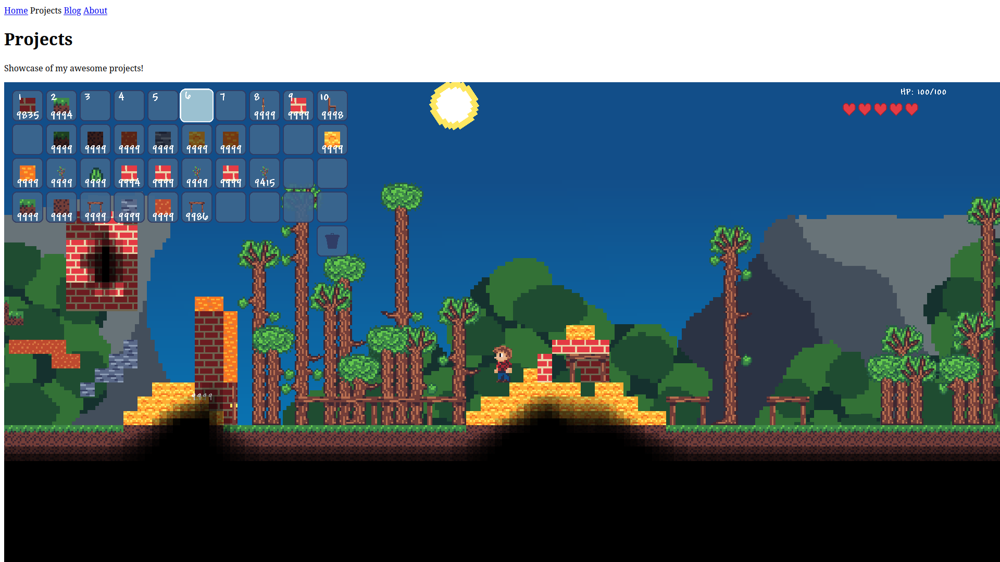
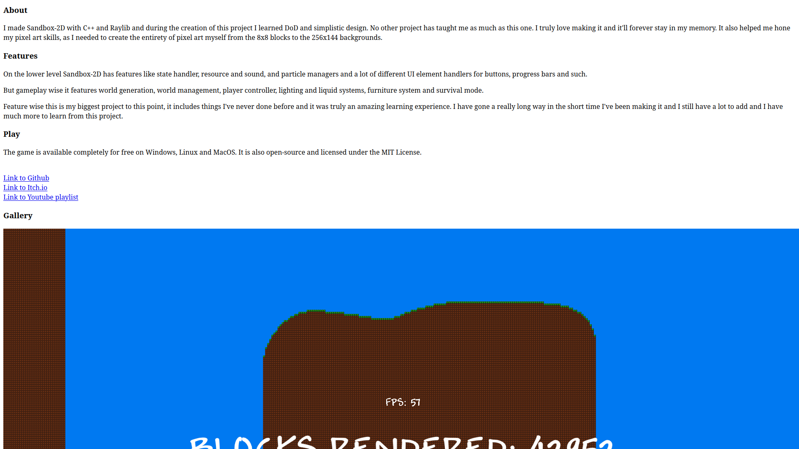
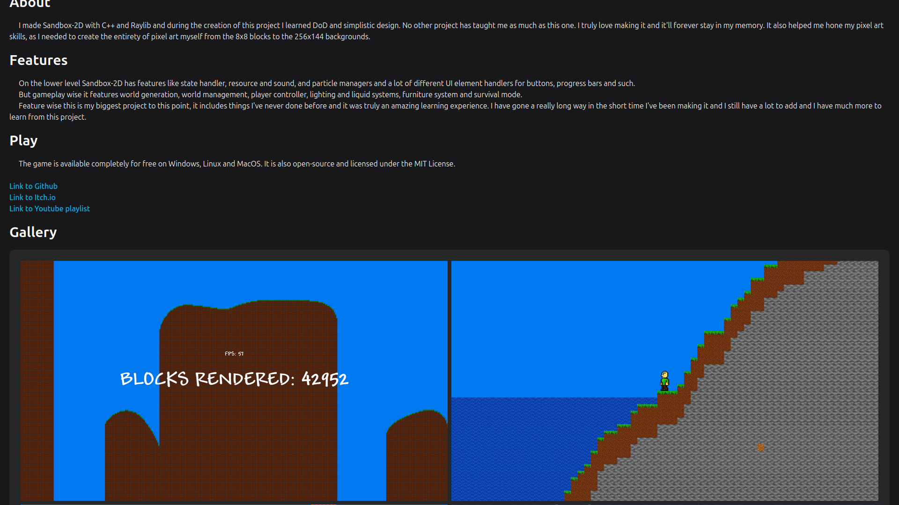
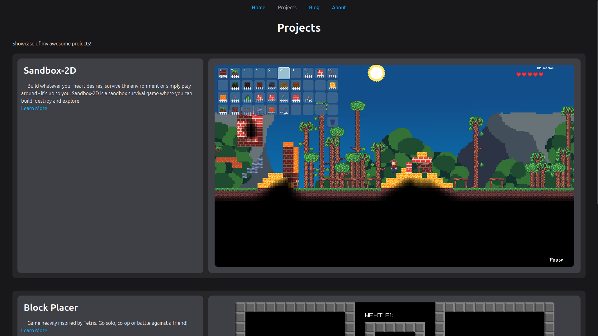
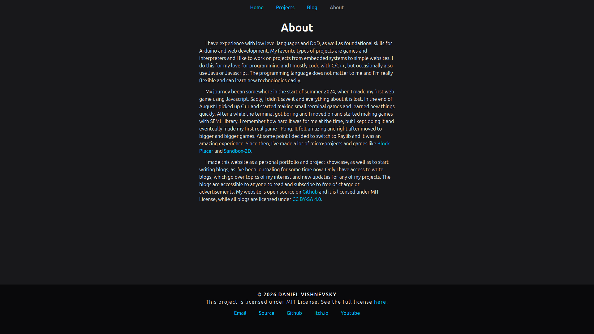
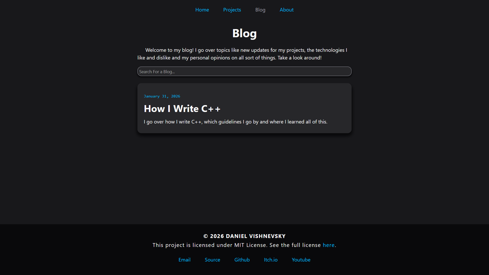
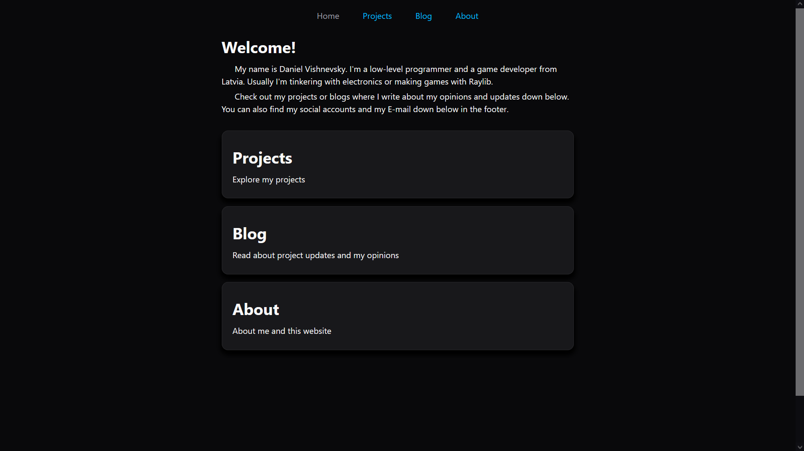
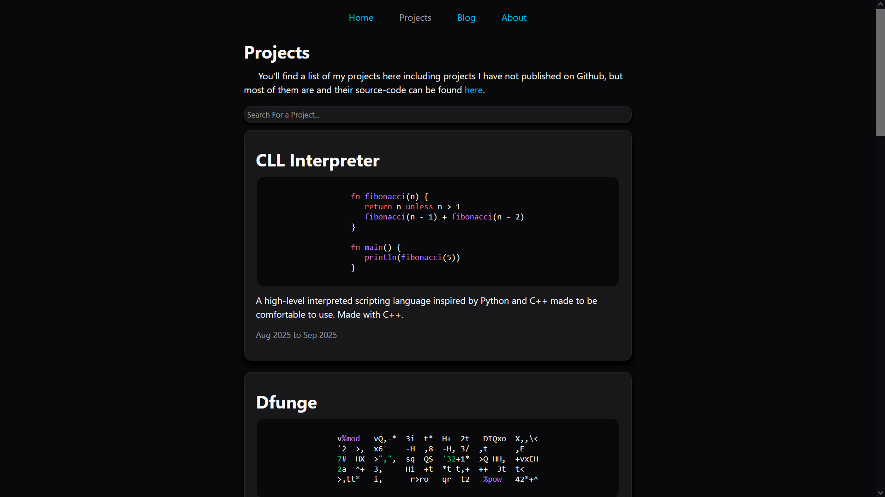

Personal Website
Daniel Vishnevsky
My personal portfolio and blog website. I publish all of my work here.
Projects
Explore my projects
Blog
Read about project updates and my opinions
Creative Writing
I enjoy creative writing. Read some of my works
About
About me and this website
Development
This website was made to solve a major issue - my projects being scattered all over the place. I've had 3 different Github accounts and some of my projects weren't public anywhere. And suddenly I got really into writing so instead of only making this website contain projects, I also made it contain my blogs and stories I've wrote.
I started making this site on January 24th 2026 and documented my journey in Hack Club Flavortown to win some prizes on the side. Originally it used HTML/Tailwind CSS/Typescript but later on I changed it to pure HTML/CSS/JS as this is a small project that proved to not need these dependencies. I'm also really into simple things.
Since then I've made numerous changes and implemented all of the features I've wanted to. Now I just have to constantly add pages for my projects and stories and write up a blog whenever I think of an interesting topic.
I don't think there's anything more to say about this website. See it for yourself! And I'll drop some older pictures so you can see how it used to look like. Click on them to view them in fullscreen. The source code is available on my Github.
Gallery







